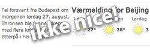

Dagbladet Nice! er en utvidelse av nettleseren som fjerner skrikende toppannonser og andre unødvendigheter som ikke burde være i en avis.
-
Aldri mer toppbannere
Dagbladet Nice! ble først og fremst laget for å fjerne de skrekkelige annonsene som tar 80% av skjermen. No more bleier.
-
Avis for nyheter
Det er irriterende å sjekke avisen for nyheter, for så å bli presentert med skattelistesøk. Med Dagbladet Nice! slipper du dette, og mer.
-

Fokus på innhold
Noe alvorlig har skjedd ved Hjelle i Gudbrandsdalen, og du bryr deg lite om været på Dovre. Dagbladet Nice! fjerner unødvendige bokser og gir artikkelteksten mer bredde.
-
En penere meny
Men Dagbladet Nice! er mer enn en vanlig AdBlock. Du får også en navigasjonsmeny som er penere, bedre og snillere med mindre tull.
Se forskjellen med Nice!
Hva folk har sagt om Dagbladet Nice!
Retter en takk til @mrkolby som var raskt ute og reparerte nye #Dagbladet!
Tusen takk til @mrkolby for Dagbladet Nice! Deilig å surfe #Dagbladet og faktisk kunne se innholdet uten rosa hypnoseadd! #Dagbladetfail
Anbefaler @mrkolby sin "Dagbladet Nice!"-extension til Safari. Gjør nye Dagbladet.no brukbart.
@mrkolby har fjernet/endret elementer, noe som faktisk gjør den penere og mer funksjonell enn DBs eget design
mer enn najs: supernajs
Takk skarru faen meg ha ;)